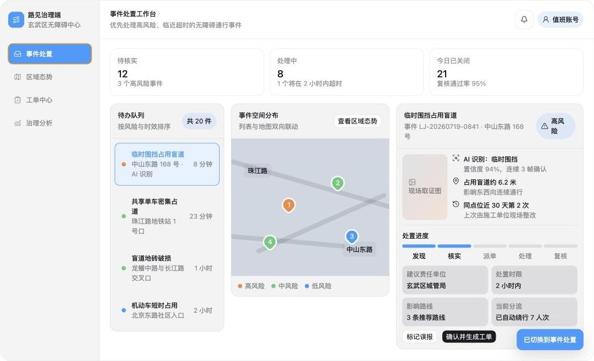

01
盲道被占是常态，不是例外
违停车辆、共享单车、施工围挡——盲人出门就面临“盲道通向障碍”的现实。
AI 无障碍出行三端协同系统
让每一段盲道，都被看见
项目负责人：毛雨晴 · 团队项目
2026年7月
1700万人每天面对的真实问题
违停车辆、共享单车、施工围挡——盲人出门就面临“盲道通向障碍”的现实。
盲道占用发现晚、上报慢、处理无闭环，缺少系统化检测—上报—治理机制。
《无障碍环境建设法》明确禁止占用无障碍设施，落地治理仍需要持续巡查和处置工具。
出行端 · 家属端 · 治理端
用户端基础功能免费，治理端按年订阅付费
| 层级 | 方式 | 费用 | 怎么用 |
|---|---|---|---|
| L1 | 手机基础版 | 免费 | 扬声器播报障碍物信息，支持手持或固定在身上使用；不需要额外硬件。 |
| L2 | + 骨传导耳机 | 299–699元 | 蓝牙连接手机，双耳开放、不遮挡环境音。 |
| L3 | + AI眼镜 | 2000–5000元 | 摄像头位于眼镜端，解放双手；消费级眼镜 + 路见软件适配层。 |
AI发现 → 系统复核 → 事件建档 → 工单处置 → 结果回传
识别疑似盲道障碍物
连续多帧校验位置与障碍类型
记录证据，生成待核验事件
管理人员核验，生成并派发工单
更新路线风险，沉淀治理数据
出行端语音导航 · 家属端实时守护 · 治理端事件闭环



Demo 已覆盖三端主要交互，目前使用模拟数据，尚未接入真实模型、后端和政务系统。
Demo 之外，还需要完成模型训练、后端开发和数据合规
YOLO11 实时目标检测；基于迁移学习微调，不从头训练。
试点采集 + 街景数据 + 公开数据集；完成障碍图片的采集、清洗与标注。
Flutter 跨平台 App + Python 后端 API + 云端 GPU 推理；治理端按 SaaS 交付。
位置数据脱敏、上报数据匿名化，遵循个人信息保护与无障碍相关法律。
用户发现的盲道障碍，可以进入核验、派单、处理和反馈流程
| 维度 | 导盲犬 | Be My Eyes | OrCam MyEye | 路见 |
|---|---|---|---|---|
| 主要场景 | 户外通行辅助 | 远程视觉协助 | 可穿戴识别 | 盲道风险识别与上报 |
| 使用方式 | 人与犬协同 | 手机/智能眼镜 | 专用穿戴设备 | 手机基础版 + 可选穿戴 |
| 服务成熟度 | 成熟专业服务 | 百万级用户平台 | 商业化产品 | 概念验证 Demo |
| 治理衔接 | 非核心功能 | 非核心功能 | 非核心功能 | 拟接入工单闭环 |
| 进入门槛 | 训练资源稀缺 | 用户端免费 | 专用硬件成本较高 | 基础版拟免费 |
三端都有人使用，治理端是现阶段主要付费方向
使用出行端查询低风险路线、接收语音预警并上报盲道障碍。
基础功能免费经用户授权后，通过家属端查看行程、接收异常提醒并提供远程协助。
基础功能免费使用治理端查看区域风险、核验事件、派发工单并跟踪处理结果。
按年订阅治理端服务从概念原型到真实用户测试，再到联合试点
完成可用 MVP
建立安全评测指标
申请联合试点
完成真实用户测试
争取首个联合试点
验证骨传导方案
形成可复制试点方案
评估 AI 眼镜适配
验证付费意愿
获奖后复盘原方案，重构三端架构并重做 Demo 和商业计划书
让每一段盲道，都被看见
项目负责人：毛雨晴
项目早期方案获2026年“工科女生未来赋能计划”全国总决赛第一名
赛后重新梳理为三端概念原型，当前数据为模拟